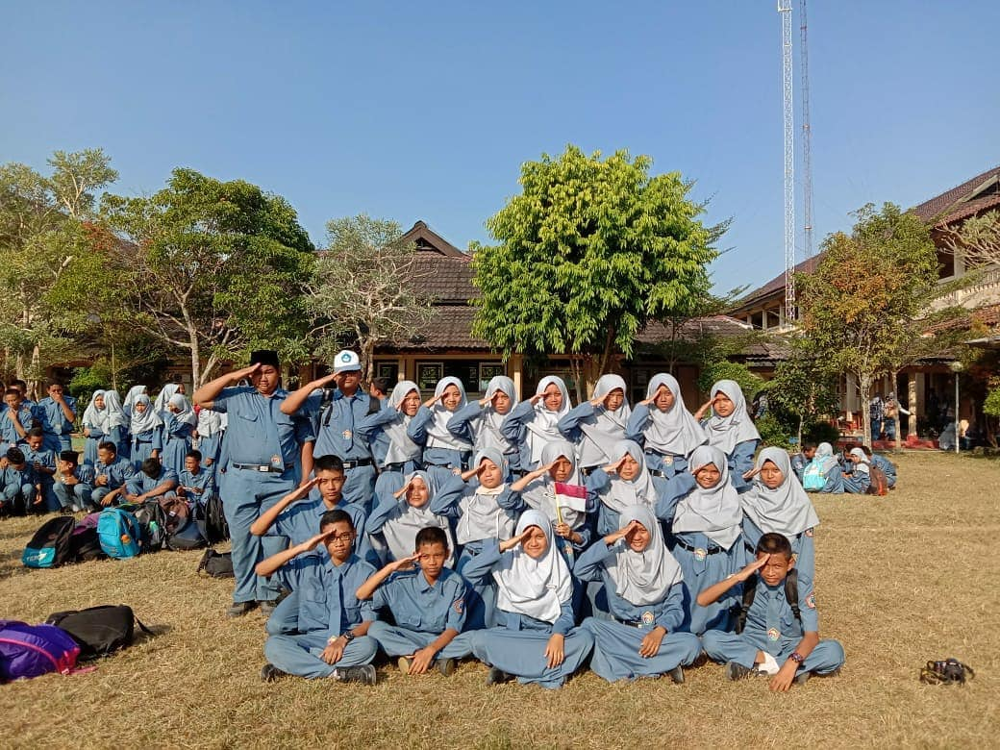

di TKJB 23
Teknologi jaringan berbasis luas atau yang biasa disebut wide area network (WAN). Ini merupakan jaringan komunikasi data yang menghubungkan pengguna pada suatu wilayah geografis besar. Biasanya terhubung melalui internet dengan peraturan khusus dari perusahaan penyedia layanan. Lihat selengkapnya
Teknologi layanan jaringan adalah teknologi yang dirancang dan dibangun untuk melayani pengguna yang menggunakan berbagai macam perangkat yang berbeda. Tujuannya adalah untuk membangun dan merancang sebuah jaringan yang sangat efektif. Lihat selengkapnya
Administrasi Infrastruktur Jaringan adalah tugas administrator jaringan yang mengelola jaringan komputer pada skala kecil dan besar. Administrasi jaringan dilakukan oleh administrator. Lihat selengkapnya
Sistem Operasi Jaringan (Network Operating System) adalah sebuah jenis sistem operasi yang ditujukan untuk menangani jaringan. Umumnya, sistem operasi ini terdiri atas banyak layanan atau service yang ditujukan untuk melayani pengguna, seperti layanan berbagi berkas, layanan berbagi alat pencetak (printer), DNS Service, HTTP Service, dan lain sebagainya. Istilah ini populer pada akhir dekade 1980-an hingga awal dekade 1990-an. Sistem operasi jaringan adalah suatu jenis sistem operasi yang dikususkan untuk menangani jaringan.Sistem operasi ini terdiri atas banyak layanan atau service yang ditujukan untuk melayani pengguna, seperti layanan berbagi berkas, layanan berbagi alat pencetak (printer), DNS Service, HTTP Service, dan lain sebagainya. Lihat selengkapnya
Cieee... yang sekolahnya homeschooling kek anak orang kaya awkwkwkw:v,piss lur
PJJ diperpanjang sampai 24 April 2021